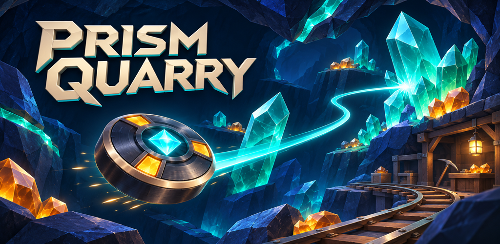

Find the perfect angle
Drag the puck to aim. Read the predicted path and use the chamber walls to reach seams that a straight shot would miss.
A little quarry. A brilliant chain reaction.
Pull back, line up your glowing drill puck, and let one satisfying ricochet turn a quiet cavern into a cascade of colour.
Development review · Godot 4.5.1 · Portrait Android + Web preview

Small input. Big payoff.
A readable trajectory, clear objectives and forgiving opening chambers put the fun in the shot. Build a route through the ore, then watch your plan unfold.
Drag the puck to aim. Read the predicted path and use the chamber walls to reach seams that a straight shot would miss.
Bounce between clusters, break a seam and collect the fragments. Short rounds make another attempt feel close at hand.
Bring the haul home. Improve your drill and rig, grow your miner level, and choose the look of your next expedition.
A reason to come back
Campaign chambers introduce new arrangements and objectives across three environments. Endless Quarry offers another haul; a seeded daily chamber gives each day a shared starting point.
Miner XP, equipment upgrades, daily goals, a seven-day login cycle and cosmetic choices give the ore a purpose. Local achievements and records keep track of your progress.
Feature descriptions cover the project build. Exact test results and remaining checks belong in the acceptance record, not these promotional cards.
See the actual build
Gameplay images appear here only when a rendered capture and its provenance exist. Viewport size is not proof of physical-device testing.
Capture source and device class will be shown per image. Emulator and physical Android results require separate evidence.
Read capture provenanceA coherent little world
Warm workshop details, luminous seams and deep cave colours tie the app icon, feature image and portrait splash together.

Play at your pace
The Android integration reserves banner space on home and results. Interstitials are scheduled at every third completed round's natural result/next boundary. An optional rewarded continuation can be earned once after failure.
Core chamber success is designed to be possible without an ad or an upgrade. Web does not simulate an earned reward. Pause, sound and feedback controls keep short sessions manageable.
Service setup is still a release task.
Test ads and disabled production Play Games mappings belong to the development package. Production IDs, consent review, signing, live service checks and Google Play publication remain owner work. No store release or Console import is claimed here.
Reviewable, downloadable, traceable
Store drafts, catalog data and import materials are source assets. Static validation does not mean Google Play has accepted or published them.
Flooded chambers. Refraction through moving water. A new way to read a ricochet. A future expansion concept only, with no announced price or release date.